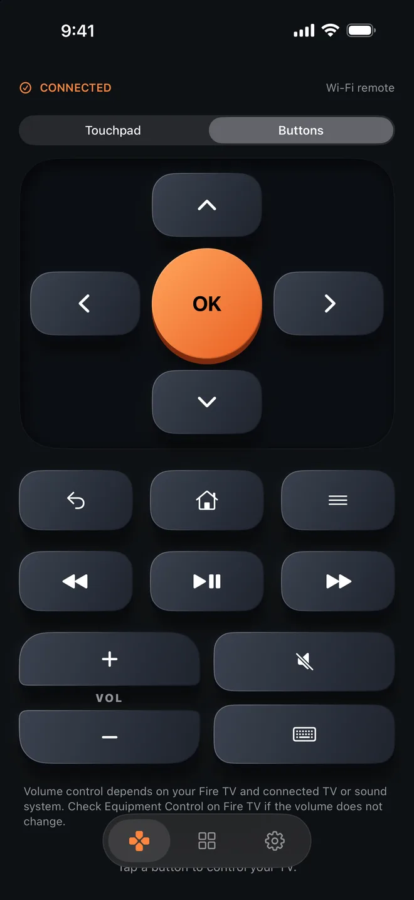

Touchpad
Swipe anywhere on the pad to move and tap to select. It works one-handed, without looking down at your phone.
Fire Remote controls Fire TV, Google TV, Samsung, LG and more over your home Wi-Fi. Pair with the code on your TV and keep watching.
Free for iPhone. No ADB, no developer mode, no extra hardware.

Try it: tap the arrows and OK on the phone, or use ← → ↑ ↓ and Enter.
Swipe like a touchpad or press real-feeling keys. Every press gives a small tap of haptic feedback.
Swipe anywhere on the pad to move and tap to select. It works one-handed, without looking down at your phone.
A full direction pad with back, home, menu and playback. Hold fast forward to keep seeking, and use the volume and channel rockers just like on the remote you lost.
Type searches, email addresses and passwords on your iPhone keyboard instead of picking letters one by one on the TV.
Open Netflix, YouTube, Prime Video and every other app installed on your TV in one tap, with their own icons.
Fire Remote looks for TVs on your network, so there is nothing to install on the TV.
Turn on your TV and keep your iPhone on the same home network.
Choose it from the list of nearby TVs, or type its IP address.
Enter the code shown on the TV, or accept the prompt on screen. Next time it reconnects with one tap.
Features depend on your TV model and software. Your iPhone and TV must be on the same Wi-Fi network.
Orange is always free. Pro unlocks eight colors, from blue to yellow. Try a few here.
Pro is a single purchase with no subscription. Restore it on any iPhone signed in with the same Apple ID.
Everything you need to replace the remote.
One-time purchase in the app.
Make sure the TV is on and that your iPhone and TV are on the same Wi-Fi network, not a guest network. Then check that Local Network access is turned on for Fire Remote in iPhone Settings, under Privacy & Security. If the TV still doesn’t appear, enter its IP address. You can find it in the TV’s network settings.
No. Fire Remote pairs with the four-digit code your Fire TV shows on screen. Nothing needs to be installed or turned on in developer settings.
Volume control depends on your TV and on any connected sound bar or receiver. If the TV sends its sound to another device, change the volume setting on the TV or on that device.
No. Pro is a single purchase. To get it back on a new iPhone, open Settings in the app and choose Restore purchases.
Pairing keys stay in your iPhone’s Keychain, and text you send to the TV isn’t stored. The free version shows ads from Google AdMob. Read the privacy policy for details.
Tell us your TV brand and model, and we’ll reply as soon as we can.